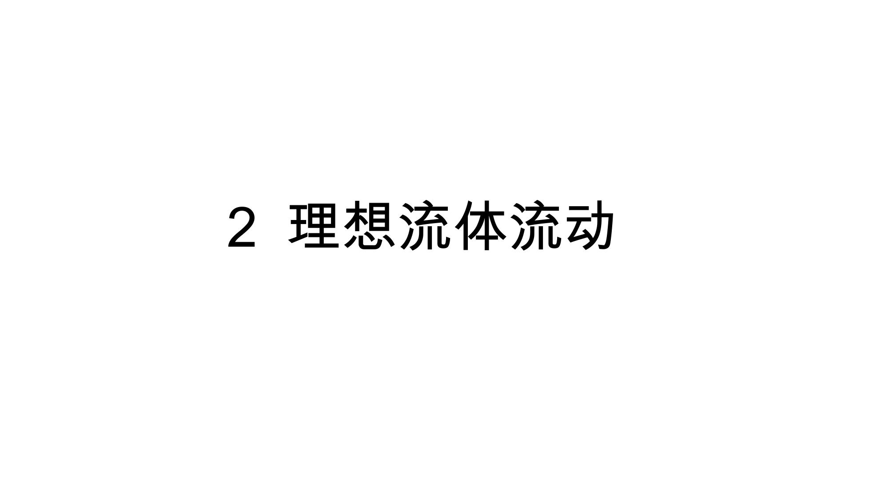
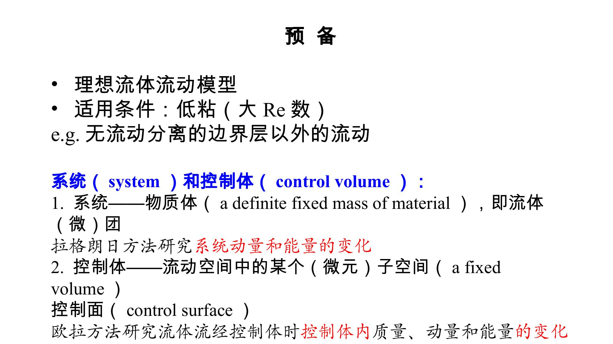
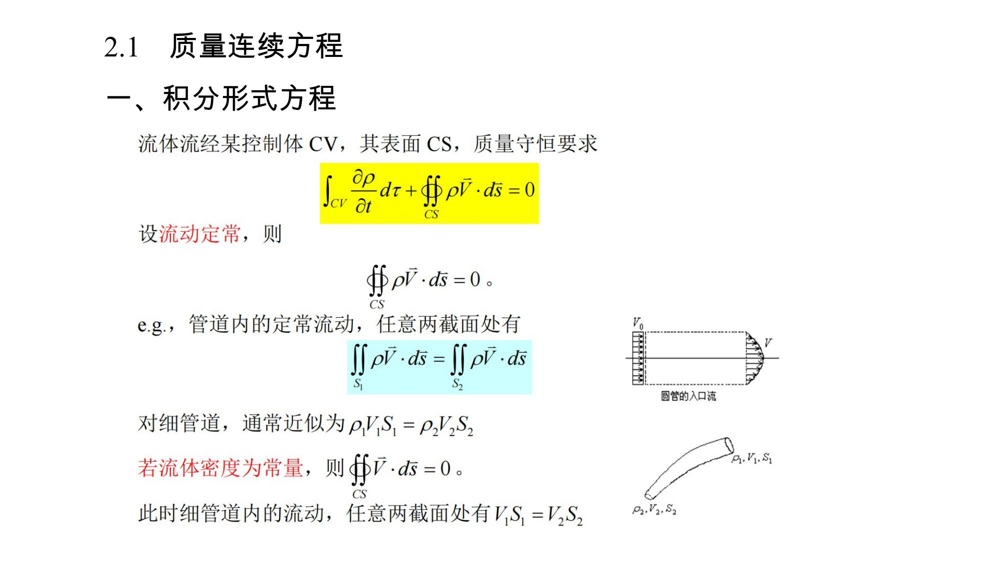
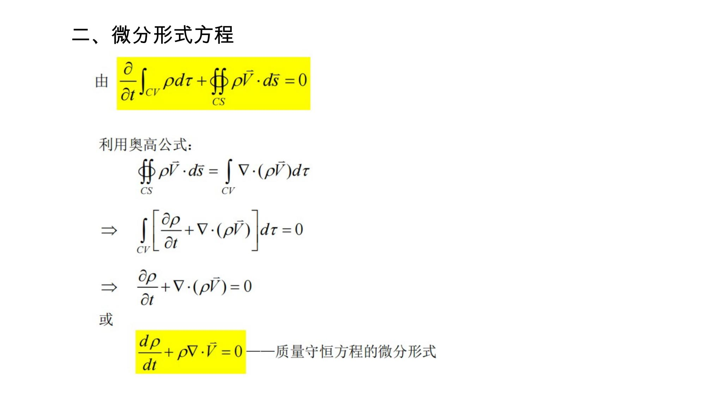
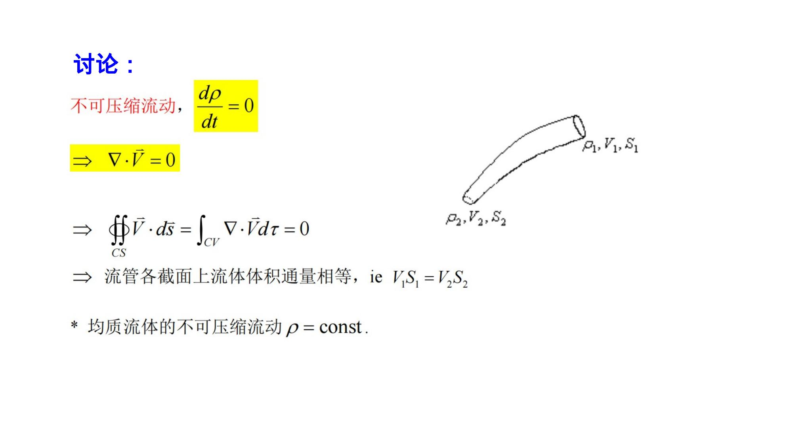
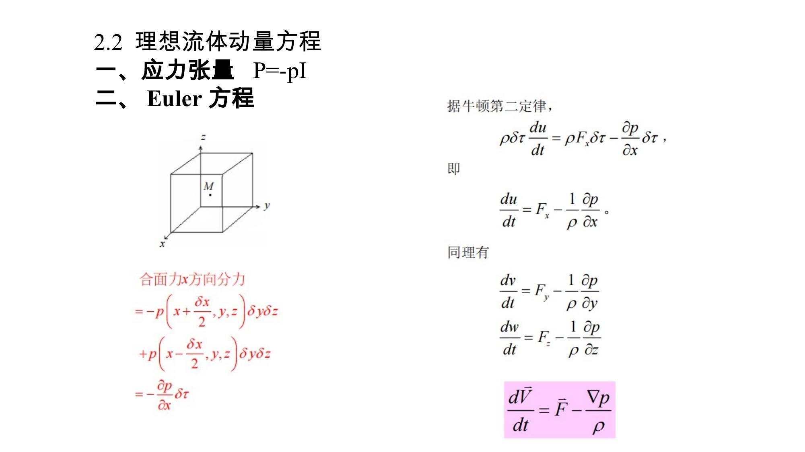
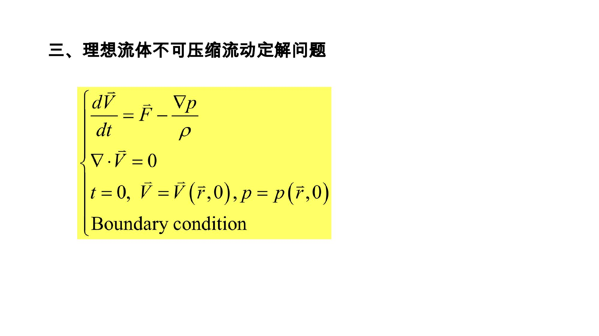
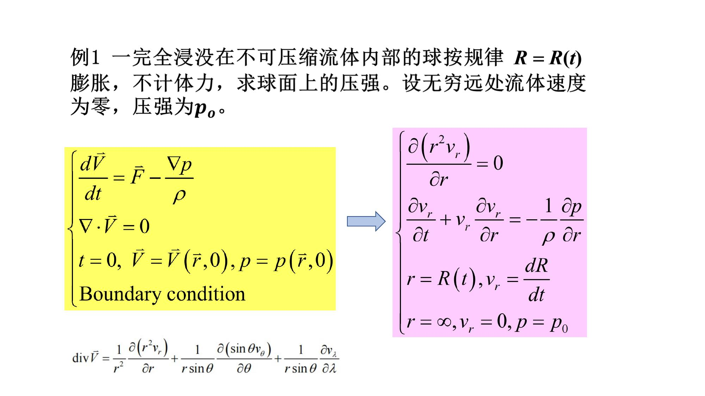

站内正文结构
正文形式PDF 页图 HTML
站内内容量8 页图 / 656 字符
内容线索2 理想流体流动
抽查判定无预览壳、无原件下载链接、无本地路径 href
Round317 深度抽查补充：本页必须直接呈现站内 HTML 正文、页图或转写文本；导航只指向本页锚点和站内入口，不指向 PDF、PPT、DOC、ZIP 原件。
Round354 内容修复本页由 Office 原件重新渲染为 8 张站内 HTML 页图，用来替换浏览器不支持的旧版 Office 图形、无 MIME 图片和公式占位；不提供原始文件下载。直接 HTML 阅读规则继续保留：本站只展示当前站内 HTML、图片和样式产物。

页图未能加载：rendered-page-001.jpg。请刷新页面；本资料页图应与本 HTML 位于同一目录。
第 1 页

页图未能加载：rendered-page-002.jpg。请刷新页面；本资料页图应与本 HTML 位于同一目录。
第 2 页

页图未能加载：rendered-page-003.jpg。请刷新页面；本资料页图应与本 HTML 位于同一目录。
第 3 页

页图未能加载：rendered-page-004.jpg。请刷新页面；本资料页图应与本 HTML 位于同一目录。
第 4 页

页图未能加载：rendered-page-005.jpg。请刷新页面；本资料页图应与本 HTML 位于同一目录。
第 5 页

页图未能加载：rendered-page-006.jpg。请刷新页面；本资料页图应与本 HTML 位于同一目录。
第 6 页

页图未能加载：rendered-page-007.jpg。请刷新页面；本资料页图应与本 HTML 位于同一目录。
第 7 页

页图未能加载：rendered-page-008.jpg。请刷新页面；本资料页图应与本 HTML 位于同一目录。
第 8 页